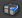

UDN
Search public documentation:
SCCIntegration
日本語訳
中国翻译
한국어
Interested in the Unreal Engine?
Visit the Unreal Technology site.
Looking for jobs and company info?
Check out the Epic games site.
Questions about support via UDN?
Contact the UDN Staff
中国翻译
한국어
Interested in the Unreal Engine?
Visit the Unreal Technology site.
Looking for jobs and company info?
Check out the Epic games site.
Questions about support via UDN?
Contact the UDN Staff
UE3 Home > Unreal Editor and Tools > Source Control Integration
Source Control Integration
Overview
Logging In
- Open
EditorUserSettings.ini in a text editor - Locate the [SourceControl] section
- Set: Disabled=False
- Save the file!
Source Control Package Icons
 When SCC is enabled, icons will appear next to the packages in the package tree view of theContent Browser. The icons are as follows:
When SCC is enabled, icons will appear next to the packages in the package tree view of theContent Browser. The icons are as follows:
| Icon | Meaning |
|---|---|
| The file is available for editing because you have it checked out. | |
| The file is read only -- you don't have it checked out. | |
|  | The file is checked out by another user. |
| You don't have the current version of the file. | |
| The file is not part of the SCC depot (it needs to be added) |
Source Control Menu
- Refresh The status of the packages in the Content Browser are only current as of the last time the window was refreshed. If you want to update the statuses immediately, use this option.
- Check Out Will first refresh the status of the file and make sure it is still available to be checked out. If it is, it will check the file out of the SCC depot.
- Submit... Will check a file back into the SCC depot. Depending on your SCC provider, this will pop up a dialog asking you for a check in comment and giving you a few options. This option is only available if the file is checked out to you.
- Revert Will revert a file back to its current revision in the depot. Any changes saved to this file by you since it was last submitted will be discarded. This option is only available if the file is checked out to you.
- Revision History... If your SCC provider supports it, this will pop up a dialog showing you the revision history of the selected file.
Other Workflow Features
Checkout on Modify Prompt
Whenever a package is marked dirty (packages that need to be saved), you will notice a dialog appears asking if you would like to check the package out of source control. This allows you to quickly checkout the package you are working on without having to go to the Content Browser and find them. This dialog only shows up the first time the package is modified and will not reappear until the package is saved and checked in to source control. The editor also queues up packages that are modified during slow operations. For example building lighting may modify several packages. You will be prompted to check them all out at once.- Check Out Selected: Checks out the selected packages from source control. Note: Ghosted packages cannot be checked out as they are checked out by someone else or not at the head revision.
- Make Writable: Makes selected packages writable. Even ghosted packages can be made writable. Simply click on the check box next to the name. A "square" icon will appear for ghosted packages. This is to let you know that these packages will be ignored if you click "Check Out Selected." Note that it is usually not a good idea to use this option if your source control provider makes files read only that are not checked out as this makes the source control provider have no knowledge of your changes.
- Ask Me Later: Does not check anything out and you will not be asked to check out any packages in the list for the duration of the editor session. Note that using some of save features will still prompt you to check out packages.
Checkout During Save
May of the save options in the editor also prompt you to checkout packages from source control. Some source control providers make files that are not checked out read only. The editor cannot save read only files so they must be checked out or made writable to save. For more information on the save operations please see the Editor Package Save Procedure and the UnrealEd User Guide pagesPerforce Specifics
Perforce Connection Dialog
When you start the editor with source control enabled for the first time you will see this dialog.- Server: Your Perforce server address and port
- User: Your Perforce username.
- Client Spec: The client spec to use when checking out and submitting files. Also known as workspace in newer versions of Perforce. After you enter your username you can optionally browse for client specs associated with your username.